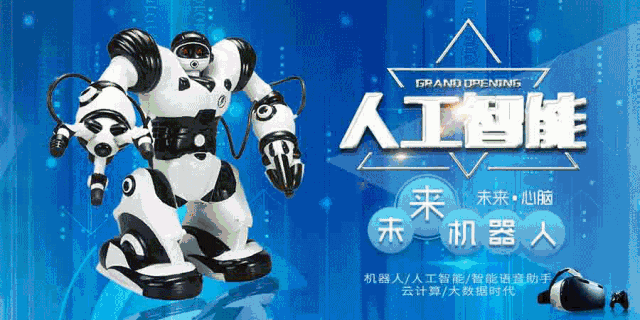
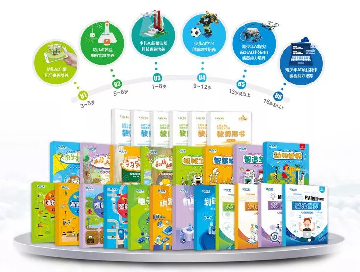
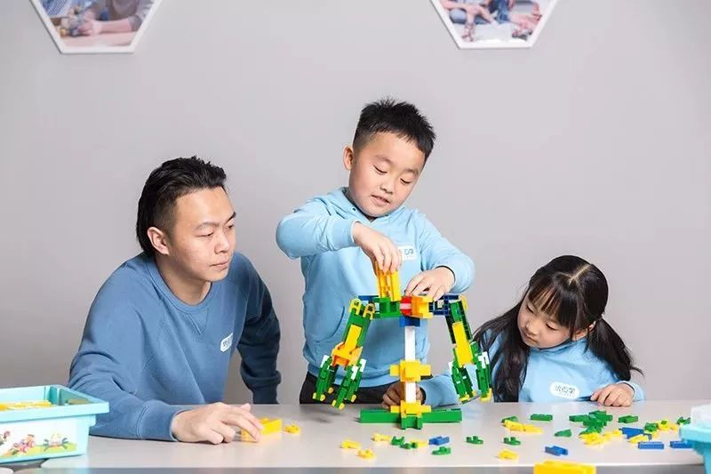
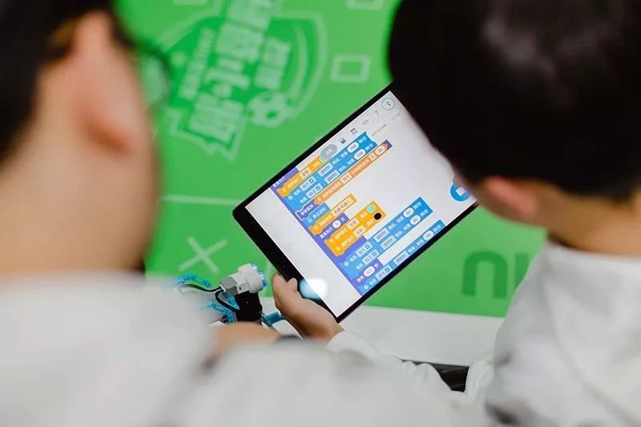
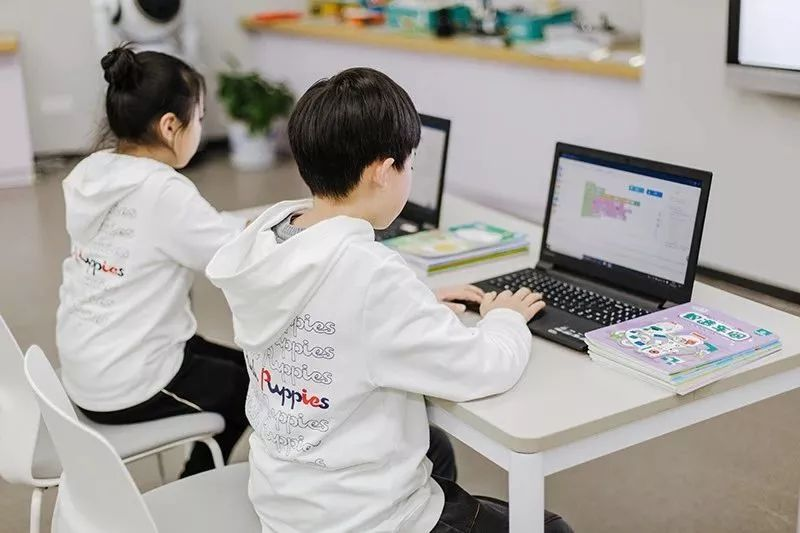
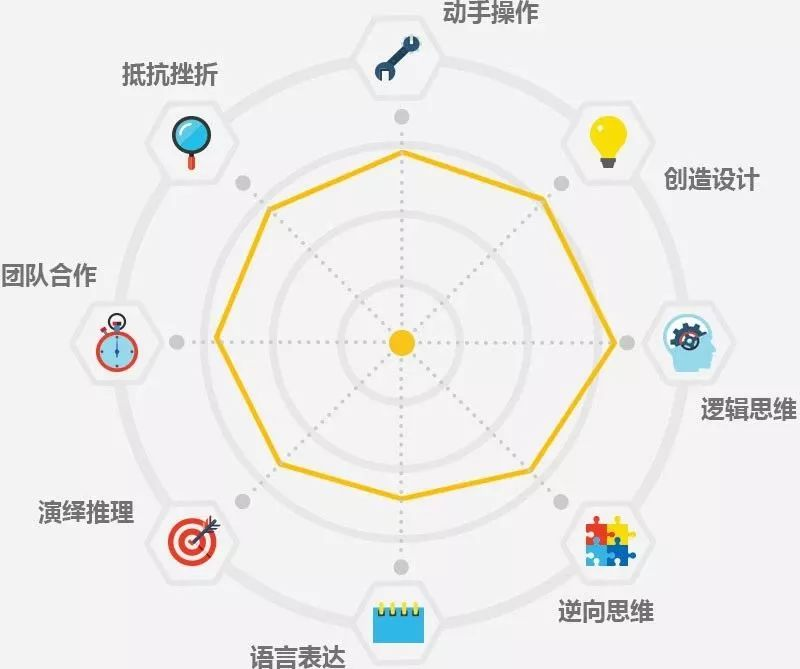
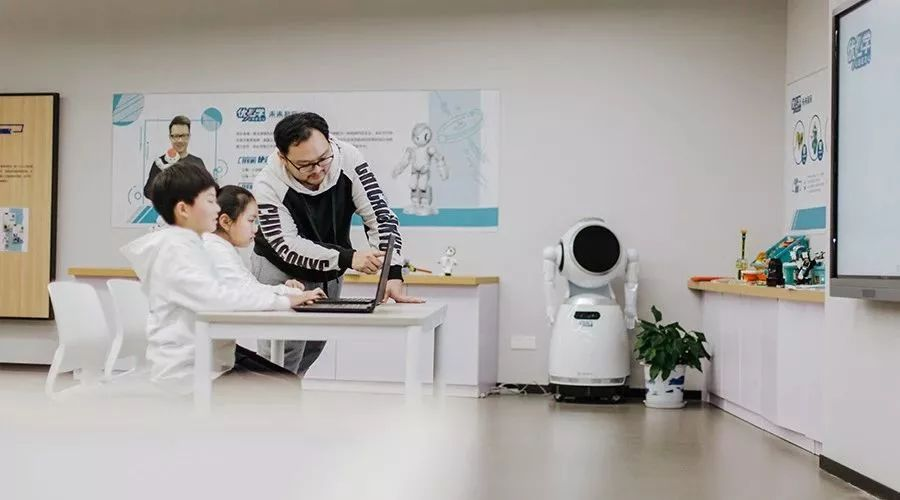

【重磅发布】优必学全套26册AI实体教材，填补中小学AI教材空白
为什么要让中小学生系统学习人工智能知识——是为了使他们能够适应未来机器人遍地走、人工智能到处有的时代。
在过去的2018年里，编程科目已然列入高考范畴，清华、北大、中科大、北航、上交等几十所大学在2018自主招生简章中对工科类专业自主招生条件中均提到了对信息学竞赛获奖的要求。18年6月初举办的清华北大信息学体验营，一批在信息学方面有特长的初中生被清华、北大提前录取，实际签约数量惊人。
其他各类如科学试验、创客等校外素质教育机构，纷纷开启了“编程大战”模式，Scratch、python、arduino、C++等编程软件的课程研发也是百家争鸣。为普及K12教育阶段的人工智能教育，国家及地方也出版了一系列有关人工智能的通用教材。

K12阶段AI教材密集出版，一方面是由于现代家庭对人工智能教育开始从弱需求趋向强需求，另一方面是政府和政策你引导下的散养市场将不复存在、行业标准亟待提升。
然而，这些教材并不能彻底解决人工智能教育的需要，人工智能教育的教材还存在很多问题。
目前在人工智能教育层面上，缺少从小学到初中再到高中，贯穿整个义务教育阶段的人工智能专属教材，人工智能教育在阶段性教育中出现了断层现象。
如果没有统一的教材，如果小学时候学一套外来人工智能教材，初中又接触一套新的理论体系，两个体系间的课程逻辑和理念很可能相距甚远，这样会导致学生的知识体系出现断层。
在已出版的人工智能教材中，我们看到课程的开发更偏向于初高中，没有针对低龄儿童的通用教材。
很多教材的编写以纯编程为主，枯燥且乏味，孩子难以产生学习兴趣。
为了解决目前人工智能教育的乱象与痛点，优必学拿出了一套人工智能课程设计的行业标准，自主研发出一套全龄段（U1-U6）系列（26册）实体教材。

它参照美国NGSS科学教学系统和国内中小学课程标准，突出AI场景应用，通过体验感知和应用实践，学习人工智能知识，强调循序渐进的编程思维，注重培养科学素养和创新思维。
它的出现，既弥补了中小学人工智能教材的空白，也标志着优必学小初高贯通式人工智能课程体系的不断完善。
通过体验感知、应用实践，学习人工智能知识
优必学人工智能课程教材，根据不同学段学生认知能力和知识积累情况的差异，有针对性地组织课程内容，每册均按一个具体的专题展开，如U1:主题讲解+课程科学知识互动+搭建难度讲解+AR场景互动。
U1的每个专题包含12-14个主题课程内容，2-4个活动课程内容，主题课程围绕人工智能的相关知识层层递进，活动课程对主题课程内容进行拓展与延伸。

趣味学习编程，注重思维的训练
众所周知，Python是一种人工智能语言，由荷兰人Guido van Rossum于1989年发明，随着AI时代的到来，这种语言有可能雄霸未来的码农圈，Python语言课程化也将成为孩子学习的一种趋势。优必学不教码农，专注逻辑思维培养，提升每一个孩子的科学思维和创新能力。


培养孩子的8大核心能力
PBL（Project-Based Learning），即项目制学习，是一种高效且有趣的学习方式，被广泛运用于全球多个国家、不同年级不同学科领域，它激发了学生更深层次的学习能力。
优必学通过PBL有效训练孩子的动手操作、创造设计、逻辑思维、逆向思维、语言表达、演绎推理、团队合作、抵抗挫折的8大核心能力。

PBL将学习的主动权归还给学生，在PBL 项目式教学中，知识的获得是源于对问题的解决而非教育者直接灌输答案。优必学老师的角色是通过支持，建议和指导来帮助学生们更好的学习。

人工智能教育改变了我们的教育观，
30年前，不识字是文盲；
20年前，不会电脑是文盲；
10年前，不会英语是文盲；
现在，
不会计算机编程语言成为新型文盲。
你怎么看呢？
合丨作丨洽丨谈


朋友会在“发现-看一看”看到你“在看”的内容